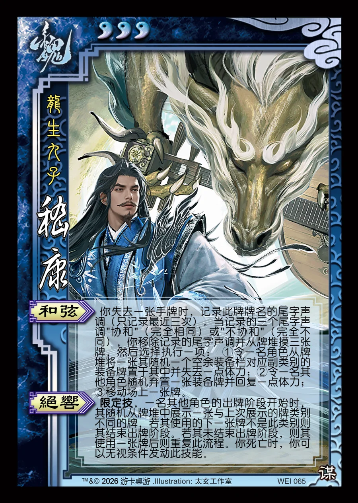

点击卡面查看大图
魏
谋嵇康
♥3龙生九子
和弦
你失去一张手牌时，记录此牌牌名的尾字声调（只记录最近三次）。当记录的三个尾字声调"协和"（完全相同）或"不协和"（完全不同），你移除记录的尾字声调并从牌堆摸三张牌，然后选择执行一项： ①令一名角色从牌堆将一张其随机一个空余装备栏对应副类别的装备牌置于其中并失去一点体力；②令一名其他角色随机弃置一张装备牌并回复一点体力；③移动场上一张牌。
绝响限定技
限定技，一名其他角色的出牌阶段开始时，其随机从牌堆中展示一张与上次展示的牌类别不同的牌，若其使用的下一张牌不是此类别则其结束出牌阶段。若其未结束出牌阶段，则其使用一张牌后则重复此流程。你死亡时，你可以无视条件发动此技能。